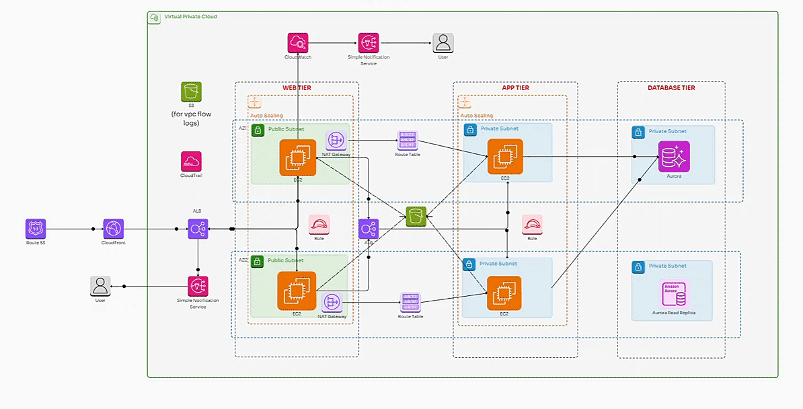

AWS
3-Tier Web Application

A three-tier AWS VPC architecture with a public-facing web tier (EC2, ALB), a private app tier, and a database tier (Amazon Aurora). Ensures scalability, security, and high availability with auto-scaling, private subnets, and monitoring using CloudWatch and SNS.